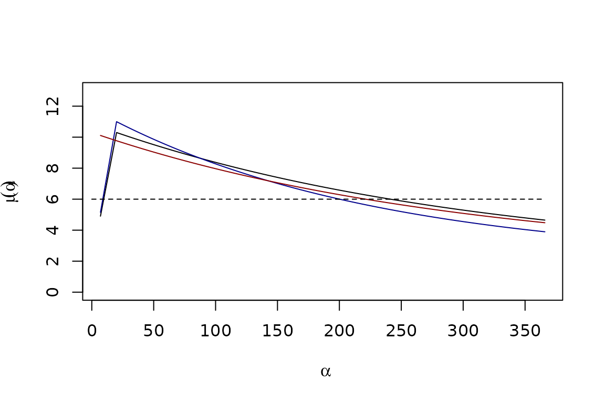
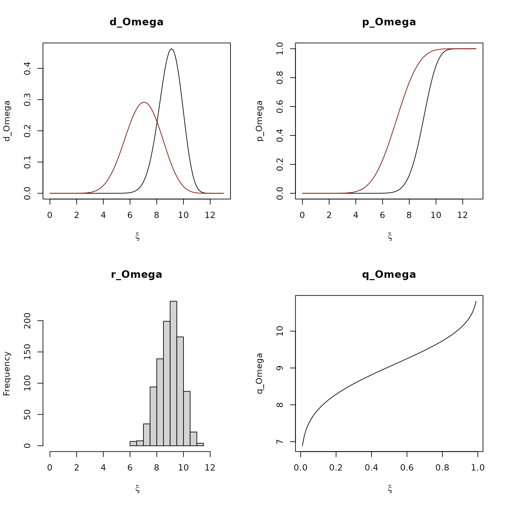

Parasite Density Distributions
Parasite_Densities.RmdIn the following, we build the functions to compute parasite density distributions using information about the MoI and the aoI. To do so:
\(F_\mu\) – We developed the
S3functionFmuto build models of the relationship between mean \(\log_{10}\) parasite densities (\(\mu\)) and the AoI (\(\alpha\)); \[\mu = F_\mu(\alpha)\]\(\Omega\) – We develop four
S3functions to compute the density, distribution, and quantile functions and random numbers for parasite density distributions, given mean \(\log_{10}\) densities, \(\mu\):d_Omega,p_Omega,q_Omegaandr_Omega\[\Omega(\xi; \mu)\]\(P\) - We develop functions to compute the density distribution of parasites in simple infections in a human cohort of age \(a\): \[ P_\tau(a | h) \sim f_P(\xi; a, \tau |h ) = \int_0^a \Omega(\xi|\mu(\alpha)) \; f_A(\alpha; a, \tau | h) d\alpha \]
\(B\) - We develop functions to compute the density distributions of parasites in a human cohort of age \(a\)
\[ B_\tau(a|h) \sim f_B(\xi; a, \tau |h) = \log_{10} \left( \sum_{M_\tau(a|h)>0} 10^{P_\tau(a |h)}\right) \] The software is modular, in the sense that \(F_\mu\) and \(\Omega\) can use any suitable function, and \(h\) is passed as a trace function.
Expected Logged Densities
In pf.memory, a S3 function family was
developed to model the relationship between the age of infection (AoI)
for a parasite infection, \(\alpha\),
and the mean, \(\mu(\alpha).\)
Fmu.base
The function Fmu.base has the following form:
\[\begin{equation} F_\mu(\alpha) = \begin{cases} \text{NA} \ & \mbox{if } 0 \leq \alpha < 7 \\[10pt] l + (b - l) \frac{{\textstyle \alpha}}{{\delta}} & \mbox{if } 7 \leq \alpha \leq \delta \\[10pt] l + (b - l) e^{-s_\alpha (\alpha-\delta)} & \mbox{if } \alpha \geq \delta\\ \end{cases} \label{mualpha} \end{equation}\]
The function Fmu.chronic has the following form:
\[\begin{equation} F_\mu(\alpha) = l + (b - l) e^{-s_\alpha (\alpha-\delta)} \end{equation}\]
In pf.memory, there are functions to set up the
parameters for each case, with over-writable defaults:
base_pars = par_Fmu_base()
base_pars1 = par_Fmu_base(tildeb=11, Sa=0.0045)
chronic_pars = par_Fmu_chronic()
aalpha = 7:366
mu_alpha = Fmu(aalpha, 0, base_pars)
mu_alpha1 = Fmu(aalpha, 0, base_pars1)
mu_alpha2 = Fmu(aalpha, 0, chronic_pars)We plot the two functions here: with the default parameters (in black), and the other parameters (in dark blue):
 ## Parasite Density Distributions
We have developed a function family to compute parasite densities as a function of the mean of logged parasite densities, \(\mu\)
parD = par_Omega_beta()
d_Omega(9, 9, 13, parD)## [1] 0.4593359
par(mfrow = c(2,2))
xx = seq(0, 13, by=0.1)
plot(xx, d_Omega(xx, 9, 13, parD), type = "l",
xlab = expression(xi), ylab = "d_Omega", main = "d_Omega")
lines(xx, d_Omega(xx, 7, 13, parD), col = "darkred")
pp = seq(0,13, by = 0.01)
plot(pp, p_Omega(pp, 9, 13, parD), type = "l",
xlab = expression(xi), ylab = "p_Omega", main = "p_Omega")
lines(xx, p_Omega(xx, 7, 13, parD), col = "darkred")
hist(r_Omega(1000, 9, 13, parD), xlab = expression(xi),
main = "r_Omega", xlim = c(0,13))
qq = seq(0.01,.99, length.out=100)
plot(qq, q_Omega(qq, 9, 13, parD), type = "l",
xlab = expression(xi), ylab = "q_Omega", main = "q_Omega")
Simple Infections
We first look at the density of parasites in simple infections – those with MoI = 1.
To compute anything, we need a function to model exposure, the FoI as a function of age, \(h_\tau(a)\). Notably, the function accepts the birth date, \(\tau\) as an argument, so it can be used to look at cohorts with different birth dates. Here, we show the FoI as a function of age for two cohorts born six months apart.
For one of these cohorts (the black line), we have plotted the density parasite cohorts. Notably, the age of the cohorts are representing infections that occurred \(\alpha\) days ago, so the \(x-\)axis is looking into the past:
Now we want to understand parasite densities in the cohort of humans. To compute the full probability distribution function in that cohort of 5-year olds, we use both bits of information:
Mean logged parasite densities for a parasite infection by age, \(\mu(\alpha)\)
The density of cohorts by age, \(A_\tau(a)\)
For a parasite of any age, we can plot its probability density function. Here, we show the probability density function for a parasite infection at age \(60\) days:
alpha = 60
fA = dAoI(alpha, 5*365, foiP3)
Pmu = fA*d_alpha2density(xx, alpha, 5*365)Now, parasite densities in simple infections have the given distribution of mean logged parasite densities. To compute the full distribution, we create a mesh over \(\xi\):
For every age of infection, \(\alpha\)
We compute expected parasite densities \(\mu(\alpha)\)
We compute the full parasite density distribution, multiplied by the density of parasites of age \(\alpha\): \[\phi(\alpha) = P(\mu(\alpha))\; f_A(\alpha, a)\]
We add \(\phi(\alpha)\) to its appropriate bin, defined by the mesh over \(\xi\).
The function dPdensity computes the parasite
distributions as a function of the host age, given a function describing
the history of exposure.
Pa = d_clone_density(xx, 5*365, foiP3)We can check to ensure that our distribution function integrates to 1:
integrate(d_clone_density, 0, 13, a=5*365, FoIpar=foiP3)$value ## [1] 1.000014